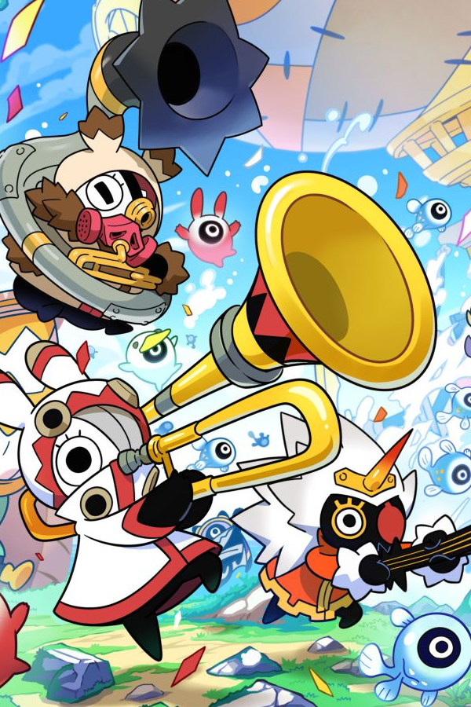

Ratatan
Every archived year-end list appearance, including placement and points earned.
About the Game
Join our Discord About the GameRatatan is a rhythm roguelike action game that combines rhythm games and side-scrolling action, with online co-op gameplay supporting up to 4 players. An intense battle unfolds with over 100 characters fighting in a massive melee. Defeat the enemies by riding the rhythm of Ratatan’s catchy, toe-tapping soundtrack in this delightful, heartfelt adventure!Welcome to Rataport!In the vast and tranquil sea, there is an island as lively as a toy box. The name is "Rataport" On the island, a strange animal-like creature called Ratatan lives happily with their friends. Despite their different appearances and personalities, they share a common dream. Which is go to “The Everafter". And meet "The Goddess" who is said to live in there. As heroes who carry the hope of all, the Ratatans embark on a journey to The Everafter. No matter how many times they failed, they will never give up and dreamt of meeting her one day.Rhythm actionFeel the beat and use rhythm sequences in time to order your Cobuns in the direction you want them to go. Since the Ratatans can be moved freely, your judgement to decide where to give orders, where to position the ratatan, and when to retreat is critical.2D animationWe want to emphasize the unique performance of 2D animation and put lively personality into the action.
| Released | 2025-09-18 |
|---|---|
| Developer | TVT Co, Ratata Arts |
| Publisher | Game Source Entertainment |
| Genres | Action, Adventure, RPG, Casual, Indie |
| Platforms | PC |
SingleplayerMultiplayerFull controller supportSteam CloudRPGCo-opcooperative2DOnline Co-OpComedyEarly AccessAnime
Where to Buy
Game information provided by RAWG.
Points by Year
List History
| Year | Source | List | Placement | Points |
|---|---|---|---|---|
| 2025 | SUPERJUMP | 50 Outstanding Games Released in 2025 | Unranked | 1 |